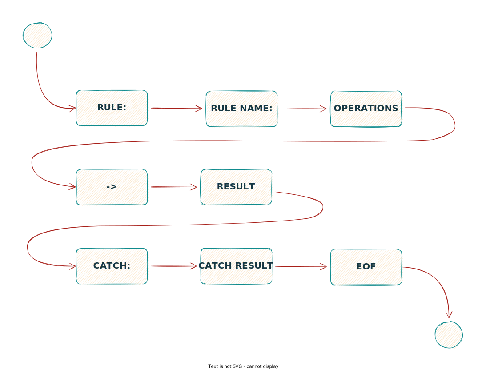

Синтаксис¶

Все правила начинаются с ключевого слова rule затем идет разделитель :,
после этого опционально может быть указано имя правила rule name + :
(оно будет отображаться в случае его срабатывания, иначе будет порядковый номер в шаблоне).
Далее описывается основной блок с функциями разделенными логическими операторами operations
(список доступных функций описан в Операции).
В завершение необходимо определить результат срабатывания правила, указав его после ->.
Все правила должны быть завершены терминальным символом ;.
Пример:
rule: countError("fingerprint", 1444, "error_code") > 5 -> decline;
Также до завершения правила опционально можно указать блок catch + : с неким результатом,
что подскажет системе как реагировать на ошибки при обработке правила.
Пример:
rule: unique("email", "ip") < 4 -> accept
catch: decline;
Для лучшего понимания смотрите раздел с примерами.